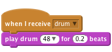
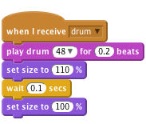

Scratch Card - Drum
Level 5
Import a new sprite and choose Things -> Drum. Name the sprite “Drum”.
We want the drum to make a sound when we click it or press the
space key.
```blocks
when Drum clicked
broadcast [drum v]
when [space v] key pressed
broadcast [drum v]
```
Now we need to make a sound when it receives drum. You can
change the number if you want to change the sound the drum makes.

Try changing the appearance to make it obvious which instrument was played.
